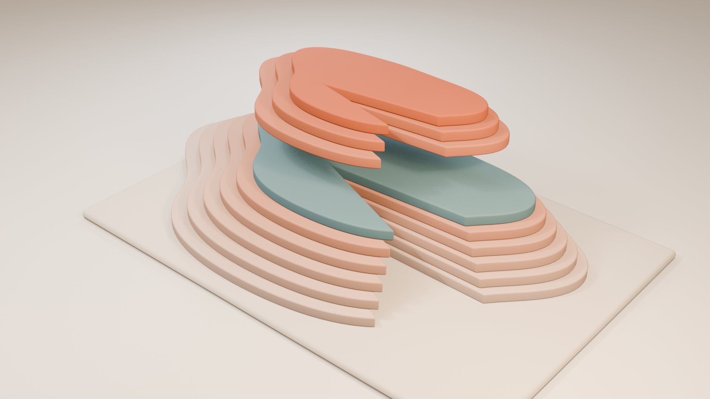

S01 / Looking Up
Contrasts cyclical and secular trends, earnings and valuation, a late-1990s analogy, and a tightening liquidity backdrop.
A working plan for charts, moving diagrams, physical metaphors and cameras that help an idea make sense.
Inspired by a year of Jurrien Timmer’s financial explanations, with a complementary retirement collection. Built for a general motion library: science, products, operations and stories can use the same visual operations.
October 2, 2025–October 2, 2026. Representative research, not a complete archive.

71 of 71 entries
Open a row for parameters, dependencies and sources. S = curation or narrow adaptation; M = composition or adapter; L = new data contract, renderer feature or 3D rig. These are effort classes, not time estimates.
Draw two or more lines on one locked axis; dim context and follow the cited series without losing its baseline.
Prototype: explicit scales, date gaps and stable keys; sampled visual defects resolved; encoded proportionality checks pass; continuous playback and 3/4-series review remain open. Effort L.
canvas.props.plot implements explicit common scales, direct endpoint labels, synchronized reveals and null gaps. See examples/quantitative-plots/REVIEW.md; focus-range treatments remain planned.
science, operations, health.
Keep the picture honest. Do not independently normalize or rescale lines without an explicit label. Break gaps instead of inventing data.
Align histories at an explicit event; reveal common history, then separate the historical continuation from the current endpoint.
Native prototype: two original cases, landscape/vertical source, calculation and encoded review evidence; continuous playback and promotion pending. Effort M.
Observed-anchor rebasing, original units/dates, shared elapsed-day scale, explicit missing values and older-only continuation shading are packaged in examples/library-kits/drivers-and-flows.
product cohorts, weather, adoption.
Keep the picture honest. Label elapsed time and base; never animate the old future as the predicted new future.
Separate total movement into earnings, multiple and income contributions, then reconcile the pieces back to the total.
Native prototype: two original cases, landscape/vertical source, calculation and encoded review evidence; continuous playback and promotion pending. Effort L.
Exact two-factor product bridge retains interaction and separate additive income; proportional signed native bars show percentage-point contributions and percent change. Cash is not reinvested; see examples/library-kits/drivers-and-flows.
revenue analysis, energy use, cost accounting.
Keep the picture honest. Multiplicative drivers are not naively additive. Show interaction/residual or use a declared log attribution method.
A family of forecast-vintage lines approaches a reporting date; observed results replace the forecast marker at publication.
proposed; not built. Effort M.
line and timeline are available; vintage/actual state and a shared legend need composition.
demand forecasting, project budgets, weather.
Keep the picture honest. Forecasts retain their as-of dates. Do not use later revisions in an earlier view.
Pull back from a few large leaders to equally sized constituent tiles; independently show how many meet the stated condition.
Native prototype: two original cases with landscape/vertical source, quantitative encoded checks and sampled independent review; continuous playback and promotion pending. Effort M.
examples/library-kits/participation-and-benchmarks packages equal member tiles and full-denominator weight segments. Dated membership, explicit conditions, nonnegative weights and missing metrics feed engine/lib/data-transforms.mjs; missing members are never dropped or silently renormalized.
survey participation, system health, product adoption.
Keep the picture honest. Count and index weight are different encodings. Preserve membership date and denominator.
Build after: T01
A flat maturity curve changes between dated observations; pin short and long ends while the middle bends.
proposed; not built. Effort L.
line supports points; maturity spacing and synchronized curve snapshots are not a dedicated asset.
delivery lead times, term pricing, capacity planning.
Keep the picture honest. Term structures are not a future time-series forecast. Preserve nonuniform maturity spacing.
A signed matrix changes by window while selected pairs expand into synchronized miniature charts.
proposed; not built. Effort L.
matrix is a comparison table, not a numeric correlation heatmap.
sensor relationships, research, demand planning.
Keep the picture honest. Compute on aligned returns, name window/method, include missing cells, and never imply causality.
Branches extend left or right of a benchmark; endpoints optionally carry a second, separately labeled metric.
Native prototype: two original cases with landscape/vertical source, quantitative encoded checks and sampled independent review; continuous playback and promotion pending. Effort M.
examples/library-kits/participation-and-benchmarks packages a signed percentage-point branch chart with a separate circle-area measure. Square-root radii preserve area ratios; zero size has a cross and no fill, while missing metrics have no endpoint. Sample holdings and open cases are independent of the period performance metric.
competitive benchmarks, experiments, service levels.
Keep the picture honest. Say percentage points versus ratios. Area, not radius, encodes a nonnegative size metric.
Build after: T01
Keep a nominal path visible while a second path accounts for a named price index; finish on the purchasing-power gap.
proposed; not built. Effort M.
delta, line and equation exist; deflation transform needs a transparent data adapter.
wages, budgets, cost of living.
Keep the picture honest. Use matched base periods; price return and total return are different series.
Three linked panels reveal the original level, its growth measure and change in that growth measure in sequence.
proposed; not built. Effort M.
line exists; linked derivatives and unit labeling are not packaged.
production, epidemiology, user growth.
Keep the picture honest. Define discrete changes precisely; do not call every change in growth a second derivative.
A path leaves its prior peak and fills the underwater distance; a separate window shows volatility or risk-adjusted performance.
proposed; not built. Effort M.
line and native shapes exist; peak-to-trough and rolling metrics require transforms.
service reliability, sales recovery, capacity loss.
Keep the picture honest. Do not substitute raw price gain for risk-adjusted return. Mark incomplete recoveries.
Observed history stops at a divider; clearly named alternative paths or computed intervals open beyond it.
proposed; not built. Effort L.
scenario-fork is qualitative; quantitative bands and interval labels are new.
planning, forecasting, climate.
Keep the picture honest. A decorative fan is not a probability distribution. Use equal path weights unless supported probabilities are supplied.
Build a histogram from samples, then highlight a supplied threshold; retain the whole distribution as context.
proposed; not built. Effort L.
bars can form bins but computed histograms and probability-area semantics are not packaged.
quality control, research, latency.
Keep the picture honest. Do not invent a bell curve or tail probability from an opinion about risk.
Reveal a two-input heatmap, then trace one controlled cross-section while holding other model assumptions fixed.
proposed; not built. Effort L.
native shapes can draw cells; a reviewed model and quantitative heatmap are new.
pricing, engineering tradeoffs, unit economics.
Keep the picture honest. Label model assumptions and invalid regions; perspective is reserved for a qualitative introduction.
A point leaves a dated trail through four labeled quadrants; its turns explain changes in momentum.
proposed; not built. Effort M.
cycle is a process diagram; quantitative phase-space plotting is not currently packaged.
inventory cycles, machine telemetry, seasonality.
Keep the picture honest. Quadrants describe chosen variables, not a guaranteed repeating sequence or a market timer.
Separate opening stock, net flows and valuation changes; reunite them at the ending balance.
Native prototype: two original cases, landscape/vertical source, calculation and encoded review evidence; continuous playback and promotion pending. Effort M.
Signed native bridges reconcile independent opening/closing stocks with supplied changes and explicit unexplained residuals; fund assets and warehouse inventory cover both residual signs. See examples/library-kits/drivers-and-flows.
inventory, headcount, reservoirs, subscriptions.
Keep the picture honest. AUM changes are not fund flows; preserve residuals and units.
Show equal multiplicative steps on an explicitly logarithmic axis, with observations separated from any fitted model.
proposed; not built. Effort L.
single line chart does not expose a reusable logarithmic scale contract.
population, adoption, scientific magnitude.
Keep the picture honest. Reject nonpositive values; fit uncertainty and extrapolation boundaries remain visible.
Several compact charts share scale and time; a selected panel expands without silently changing either.
proposed; not built. Effort M.
native line, bars and canvas provide parts; small-multiple layout is new.
operational dashboards, product comparisons, research.
Keep the picture honest. Shared scales by default; disclose independent scales and maintain stable identities during resorting.
A native beam tilts between named forces, then resolves into matched evidence panels.
existing source; adaptation/review needed. Effort S.
library/sketches/balance.mjs; native kpi seesaw; example kit added in this change.
tradeoffs, product choices, policy.
Keep the picture honest. Choreographed tilt is qualitative, not a measure of net financial impact.
Build after: No new inventory dependency.
Follow a token through connected reservoirs, gates and balance-sheet compartments; pause at the bottleneck.
proposed; not built. Effort M.
cash-lock, pipeline, queue and world cameras supply components.
supply chains, queues, water, payments.
Keep the picture honest. Money stocks, flows and market demand are different concepts; arrows require a stated relationship.
Build after: T05
Cash-flow cards occupy future stations; each returns to a present-value plane using the declared formula.
proposed; not built. Effort M.
world, dolly, equation and native type exist.
project appraisal, energy investment, planning.
Keep the picture honest. Keep distances qualitative unless time spacing is explicit. Native values carry the calculation.
Move labeled tokens between compartments while keeping total count constant; finish on an exact native allocation chart.
proposed; not built. Effort M.
donut, waffle and kpi stack exist; conservation choreography is new.
budgets, resource allocation, scheduling.
Keep the picture honest. Show weights separately from risk contribution. Rebalancing does not guarantee protection.
Build after: T01
Travel from origin to destination, expose a narrow passage, then inspect alternative routes and their constraints.
proposed; not built. Effort M.
route, harbor, pipeline and queue sketches already exist.
logistics, networks, production.
Keep the picture honest. Label conceptual geography; do not imply invented capacities or real-time shipping positions.
Build after: T05
Follow investment into tools, adoption and output, with a visible delay and a branch where the payoff is uncertain.
proposed; not built. Effort M.
pipeline, steps, network and native data faces exist.
training, automation, manufacturing.
Keep the picture honest. Investment is not realized productivity; distinguish measured output from a proposed causal explanation.
Build after: T05
A common cash source branches into investment, distributions and reserves; financing enters from a separately labeled line.
proposed; not built. Effort M.
flow and cash-lock are useful bases; quantitative Sankey widths are not supported as a dedicated asset.
company finances, budgets, energy flows.
Keep the picture honest. Use uniform qualitative arrows unless widths come from reconciled amounts.
Build after: C16
Begin beside a handful of oversized objects, pull back to the full crowd, then switch to equal-size participation tiles.
proposed; not built. Effort M.
crowd, magnitude and waffle exist.
market share, ecosystems, audiences.
Keep the picture honest. Make the switch from weight to count explicit; perspective size must not masquerade as an exact weight.
Trace alternative routes from a shared starting point; return to the assumption that selects each route.
existing source; adaptation/review needed. Effort S.
scenario-fork, scenario-origin, scenario-outcomes and scenario-lab playbook exist.
planning, decision education, troubleshooting.
Keep the picture honest. Branch position, brightness and width do not encode probability.
Build after: No new inventory dependency.
Open a physical-looking evidence desk; separate observation, proposed explanation and the missing test.
existing source; adaptation/review needed. Effort S.
evidence-desk, evidence-gap, annotate and research-investigation exist.
research, education, investigations.
Keep the picture honest. Keep a theory visibly distinct from observed data, including source claims that contain imprecise statistics.
Build after: No new inventory dependency.
Hold the basket constant while prices change; compare what an unchanged budget can purchase.
proposed; not built. Effort M.
icon-grid, bars and delta supply components.
household budgets, pricing, procurement.
Keep the picture honest. A representative index is not every household experience; disclose basket and dates.
Build after: C09
Move among regional panels linked by a named relationship; switch from map to shared-scale comparison for evidence.
proposed; not built. Effort L.
globe and route exist; verified geographic geometry and data binding are additional work.
trade, ecology, communications.
Keep the picture honest. Separate geography from political claims; maps never imply causal influence without evidence.
Build after: C18
Brass arms and ceramic weights exchange gentle motion, then settle for the editor to cut to evidence.
existing source; adaptation/review needed. Effort S.
library/sculptures/counterweight-mobile.* and retained clip/scene exist; packaged as balance-study.
tradeoffs, dependencies, priorities.
Keep the picture honest. This is a choreographed metaphor, not force simulation, allocation or exact values.
Build after: No new inventory dependency.
Lift a surface to expose an underlying layer before matching the silhouette to a native breakdown.
existing source; adaptation/review needed. Effort S.
strata-landform and exploded-core recipes/clips already exist.
hidden structure, science, product systems.
Keep the picture honest. Invented layers are not actual product internals or measured economic strata.
Build after: M06
Follow a ribbon through a knot, emerge into an open view and continue its line as a native path.
existing source; adaptation/review needed. Effort S.
ribbon-thread recipe and clip; native thread-knot and thread-opening sketches.
conversations, networks, continuity.
Keep the picture honest. Flow speed and strand thickness remain decorative unless explicitly bound to data.
Build after: M06
Transparent chambers and sliding gates reveal a staged transfer; use geometry rather than expensive fluid simulation.
prototype; transparent reservoir transfer and access gate retained in both formats; continuous playback and master acceptance pending. Effort L.
library/sculptures/reservoir-transfer adds transparent chambers, conserved analytic fill volumes and staged gate/transfer/closure. physical-mechanisms retains four native uses across landscape/vertical with baked geometry and source-bound cues. The earlier reserve-gate remains in research-study.
liquidity, water, inventory.
Keep the picture honest. Qualitative liquid levels by default; exact balances remain in native graphics.
A flexible frame compresses around a rigid central object, then releases; the camera holds a readable silhouette.
proposed; not built. Effort M.
no matching recipe; native keys can prototype the operation.
constraints, capacity, tradeoffs.
Keep the picture honest. Do not imply a calibrated price elasticity. Earnings and multiples are labeled only in the native explanation.
Build after: T05
Two suspended objects shift from independent rhythms to coordinated movement when a visible connector engages.
proposed; not built. Effort L.
counterweight recipe offers construction helpers, not a correlation rig.
synchronization, networks, system coupling.
Keep the picture honest. Choreography illustrates a change in relationship; it is not a measured correlation coefficient.
A segmented strip bends from flat to steep, then cuts to an orthographic native curve with explicit tenors.
proposed; not built. Effort M.
ribbon-thread is a different geometry; this is a new recipe.
delivery curves, cost curves, capacity.
Keep the picture honest. The 3D strip introduces shape only. Exact yields and maturity spacing belong to C06.
Begin on a few lit towers; pull back as illumination spreads across a field of equal modules.
proposed; not built. Effort M.
native crowd and citygrid exist; a 3D instanced field is new.
participation, adoption, infrastructure.
Keep the picture honest. A lit module is symbolic unless count and membership are supplied and checked.
Repeated tokens approach a narrowing gate, queue, then advance through an alternate passage.
prototype; queued packets and bypass gate retained in both formats; continuous playback and master acceptance pending. Effort M.
library/sculptures/conveyor-bypass; physical-mechanisms retains source scenes, clearance checks and warehouse/network native adaptations in landscape and vertical.
logistics, latency, manufacturing.
Keep the picture honest. Use deterministic keyframes. Do not claim simulated throughput from an aesthetic animation.
Build after: T05
Generic ceramic household objects occupy a stable basket; removable sleeves expose the comparison beneath.
proposed; not built. Effort M.
no recipe; use simple original geometry, no branded packaging.
cost of living, procurement, consumer education.
Keep the picture honest. Keep product identity illustrative and prices native. Avoid making smaller objects imply price changes.
Build after: I11
Modular frames assemble first; a delayed light travels through the completed network to downstream objects.
proposed; not built. Effort L.
native network and pipeline can prototype this; new Blender geometry/rig.
AI infrastructure, utilities, training, research.
Keep the picture honest. Light arrival denotes the authored story beat, not verified return on investment.
Camera travels from a short inner arc to wider nested arcs, establishing multiple horizons before native histories appear.
proposed; not built. Effort M.
tunnel sketch exists; new Blender rig and original geometry.
history, seasonality, long-term planning.
Keep the picture honest. Ring size and repetition do not establish periodicity or predict a cycle.
A fixed set of ceramic pieces migrates between trays; end poses line up with a native part-to-whole chart.
proposed; not built. Effort M.
quiz-triptych is an adjacent source; generalized conservation choreography is new.
budgets, staffing, resource planning.
Keep the picture honest. Token count is qualitative unless a declared unit reconciles to weights; no risk equivalence implied.
A moving shadow or opening shell changes what is visible; native evidence appears only after the reveal settles.
existing source; adaptation/review needed. Effort S.
shadow-arcade and petal-reveal already exist; native die-cut-aperture is an alternative.
discovery, uncertainty, chapters.
Keep the picture honest. A threshold is a narrative device, not an implied trigger for trading.
Build after: No new inventory dependency.
Start inside a mechanism, then travel outward to reveal the connected system.
prototype; continuous playback and master review pending. Effort S.
linked-system supplies a retained perspective detail-to-system path with constant lens and native captions. See examples/library-kits/camera-studies.
systems, architecture, education.
Keep the picture honest. Native chart axes and source labels stay readable; do not distort quantitative marks.
Build after: No new inventory dependency.
A single hero becomes one member of a larger field, changing the viewer's sense of scale.
prototype; continuous playback and master review pending. Effort M.
hero-field supplies a retained perspective hero-to-field path; all fifteen markers are illustrative, not measured. See examples/library-kits/camera-studies.
concentration, ecology, adoption.
Keep the picture honest. A count needs real data; a decorative crowd must be labeled as an illustration.
Build after: No new inventory dependency.
Shift focus between physical layers while crisp native copy presents the qualification.
prototype; continuous playback and master review pending. Effort S.
focus-depth supplies a fixed-camera focus transfer; native claims and qualifications remain sharp. See examples/library-kits/camera-studies.
research, product proof, education.
Keep the picture honest. Never blur the only source or risk label during its reading hold.
Build after: No new inventory dependency.
Begin on a sculptural arrangement; rotate to a flat measurement plane before showing exact quantities.
proposed; not built. Effort M.
Blender camera supports authored shots; there is no reusable cross-renderer pose contract.
technical diagrams, data explanations.
Keep the picture honest. Reveal labels after the quantitative view settles. Do not measure perspective-distorted bars.
Follow one token through a route and settle at the constraint; keep the surrounding system available in a pullback.
proposed; not built. Effort M.
native along, route and world views exist; automated chase framing is new.
logistics, payments, networks.
Keep the picture honest. Path duration is story timing unless tied to observed transit time.
Build after: T03
A material strip, circle or tile ends at a registered pose and continues as an editable native chart mark.
proposed; not built. Effort M.
native morph IDs work across native beats; baked clips cannot use those IDs.
explainers, product films, data reveals.
Keep the picture honest. Match cuts are editorial transitions, not proof that metaphor geometry encodes the data.
Keep the subject and copy region explicit while authoring separate landscape and vertical camera endpoints.
partial prototype; fixed orthographic copy-safe fitting and two-format baked-frame checks; moving endpoints and general presets pending. Effort M.
artkit.fit_camera reserves explicit normalized subject/copy bounds; physical-mechanisms verifies all baked frames in four source variants and reviews separate native landscape/vertical layouts. camera_rig.fit_perspective now fits independent landscape/portrait endpoints for three camera studies; arbitrary aspect reframing remains open.
all formats.
Keep the picture honest. A crop is not verified portrait composition; review each format.
Build after: T03
Accelerate an explicitly labeled historical interval, then slow down at the event that changes interpretation.
proposed; not built. Effort M.
native key timing exists; data-time/editorial-time mapping utility does not.
history, experiments, long processes.
Keep the picture honest. Keep calendar time visible; never let animation speed imply data velocity without a declared mapping.
Move a cut plane through an object, pause on a hidden relationship and return to the whole.
proposed; not built. Effort L.
exploded-core and strata are lift-apart operations; a general section-plane rig is new.
science, engineering, systems.
Keep the picture honest. Do not portray a conceptual cutaway as a real engineered model.
Build after: T04
Standardize motion phases so the action ends before the native evidence-reading interval starts.
Partial implementation: explicit initial/action/final holds for gate, bridge and quiz plus whole-cycle contracts for six loops; reusable anticipation/settle choreography and continuous review remain open. Effort M.
Shared phase schema and bounded retiming planner; gate/bridge actual pose schedules and static transform checks; docs/motion-phases.md
every reusable motion.
Keep the picture honest. Retiming must not cut off settlement or evidence holds; loops and one-way reveals have different contracts.
Build after: T05
A shared data-mark specification gives new charts explicit units, axes, legends, thresholds and interval semantics.
Partial implementation: strict data/scale contract, native geometry and bounded encoded proportion checks; further marks and full artwork acceptance remain open. Effort L.
fframes/plot-data.mjs and plots.mjs implement bounded comparable series, linear/date x, linear/log y, ticks, source/as-of and observation annotations. Threshold and interval marks remain planned.
all quantitative graphics.
Keep the picture honest. Do not weaken existing native number/source integrity checks.
Build after: No new inventory dependency.
Retain input snapshots and declared transforms for rebasing, deflation, returns, rolling windows and decompositions.
Partial implementation: finance helpers, observed-anchor rebasing, exact product decomposition, stock reconciliation, full-membership count/weight summaries and benchmark differences; rolling statistics, annualization and vintage alignment remain planned. Effort L.
engine/lib/finance.mjs provides account ledgers, marginal matching, vesting, fees, salary/service benefits and price-basis conversion. engine/lib/data-transforms.mjs adds rebasing with UTC elapsed days/null preservation, two-factor decomposition with explicit interaction and stock reconciliation with unexplained residuals. Original input hashes and native integration evidence are retained; see docs/data-transforms.md. It also preserves full membership in count/weight summaries and computes signed benchmark differences while retaining zero sizes and missing metrics.
science, operations, finance.
Keep the picture honest. Record revisions, missingness and assumptions; no chart-image digitization treated as exact data.
Build after: No new inventory dependency.
Export subject bounds, safe label regions and handoff points for each prepared asset and format.
proposed; not built. Effort M.
asset.json has prose copy guidance; machine-readable per-frame anchors are proposed.
all compositing.
Keep the picture honest. Do not assume tracked 3D labels already work; begin with static end-pose anchors.
Build after: No new inventory dependency.
Trusted built-in helpers create a few reusable dolly, orbit, truck, orthographic and focus rigs with baked keyframes.
partial prototype; orbit, truck and broader rig presets remain. Effort L.
camera_rig.py supplies complete deterministic poses, a Blender bake adapter and perspective endpoint fitting. Two pullbacks and a focus preset are retained in camera-studies; broader camera presets remain open.
all 3D assets.
Keep the picture honest. Shared/project kits stay JSON-only. Bake transforms and avoid live random state or uncached physics.
Build after: No new inventory dependency.
Publish named phase intervals and safe trim points so native evidence can align with prepared motion.
Partial implementation: fourteen recipe contracts, custom pose timing, safe clip-selection plans and retained drafts; physical-mechanisms and camera-studies bind native captions to source phases; general automatic cue integration remains open. Effort M.
engine/lib/motion-phases.mjs; sculpture --phase-seconds; fourteen recipe contracts; examples/motion-phases gate/bridge and physical-mechanisms/camera-studies source-bound native cues and explicit still holds
all mixed-media scenes.
Keep the picture honest. Distinguish a clip playback-rate change from a new simulation or exact source-time map.
Build after: No new inventory dependency.
Browse by storytelling purpose, visual operation, medium, readiness and source inspiration.
proposed; not built. Effort M.
offline sculpture gallery exists; this research delivers a local searchable planning catalog.
all library discovery.
Keep the picture honest. Planning records are not installed assets; previews of existing media are distinguished from concepts.
Build after: No new inventory dependency.
Prepare optional alpha, shadow, depth and object-ID passes for selective compositing and label occlusion.
proposed; not built. Effort L.
current sculpture delivery is opaque MP4; no general multilayer handoff is claimed.
advanced compositing.
Keep the picture honest. Prototype one format through the native decoder before committing to an alpha/export workflow.
Record recent mechanism, material, camera and story choices; show candidate sheets to help avoid repeating the same film grammar.
proposed; not built. Effort M.
sheet, looks, critique and QA exist; cross-film variation memory/reporting is new.
all recurring series.
Keep the picture honest. Novel color or a new seed alone is not a new concept; never force a less truthful visual for variety.
Build after: T06
Employee and employer streams enter an account; native traces distinguish principal from investment gains or losses.
Native prototype implemented: two fictional scenarios in landscape and vertical; calculation and rendered review evidence retained; continuous playback and promotion remain pending. Effort M.
examples/library-kits/retirement supplies editable native recipes, 18 specimen projects, exact calculation inputs, proportional rectangle checks, clips and independent review. Built on engine/lib/finance.mjs and canvas.props.plot. Broader metaphor/rail variants remain proposed; no accepted artwork claim.
fundraising, inventory accumulation.
Keep the picture honest. Do not present assumed returns as a forecast. Reconcile every period and preserve negative returns.
A contribution travels along a rule strip; each match tier fills only as eligible contributions reach it.
Native prototype implemented: two fictional scenarios in landscape and vertical; calculation and rendered review evidence retained; continuous playback and promotion remain pending. Effort M.
examples/library-kits/retirement supplies editable native recipes, 18 specimen projects, exact calculation inputs, proportional rectangle checks, clips and independent review. Built on engine/lib/finance.mjs and canvas.props.plot. Broader metaphor/rail variants remain proposed; no accepted artwork claim.
rebates, grant matching.
Keep the picture honest. Matching uses supplied plan rules. Show whether the calculation is per payroll or annual; do not invent true-ups or legal limits.
A timeline changes ownership of the employer compartment while the employee compartment stays separate.
Native prototype implemented: two fictional scenarios in landscape and vertical; calculation and rendered review evidence retained; continuous playback and promotion remain pending. Effort M.
examples/library-kits/retirement supplies editable native recipes, 18 specimen projects, exact calculation inputs, proportional rectangle checks, clips and independent review. Built on engine/lib/finance.mjs and canvas.props.plot. Broader metaphor/rail variants remain proposed; no accepted artwork claim.
milestone grants, conditional rewards.
Keep the picture honest. Vested means owned, not immediately withdrawable. Do not apply employer forfeiture to employee elective contributions.
Two aligned balances share one return/contribution path; the ending gap separates fees paid from lost growth.
Native prototype implemented: two fictional scenarios in landscape and vertical; calculation and rendered review evidence retained; continuous playback and promotion remain pending. Effort M.
examples/library-kits/retirement supplies editable native recipes, 18 specimen projects, exact calculation inputs, proportional rectangle checks, clips and independent review. Built on engine/lib/finance.mjs and canvas.props.plot. Broader metaphor/rail variants remain proposed; no accepted artwork claim.
maintenance costs, service charges.
Keep the picture honest. The ending balance gap is not the sum of charged fees. State fee assumptions; do not imply that lower fees alone establish suitability.
A reservoir switches from inflows to a measured payout stream; unfunded withdrawals remain visible after depletion.
Native prototype implemented: two fictional scenarios in landscape and vertical; calculation and rendered review evidence retained; continuous playback and promotion remain pending. Effort M.
examples/library-kits/retirement supplies editable native recipes, 18 specimen projects, exact calculation inputs, proportional rectangle checks, clips and independent review. Built on engine/lib/finance.mjs and canvas.props.plot. Broader metaphor/rail variants remain proposed; no accepted artwork claim.
inventory drawdown, project runway.
Keep the picture honest. Do not draw negative account balances as payable cash. Expose shortfall and depletion; no safe withdrawal claim.
Salary, service and accrual factors enter a native formula one at a time before resolving to an annual and monthly amount.
Native prototype implemented: two fictional scenarios in landscape and vertical; calculation and rendered review evidence retained; continuous playback and promotion remain pending. Effort M.
examples/library-kits/retirement supplies editable native recipes, 18 specimen projects, exact calculation inputs, proportional rectangle checks, clips and independent review. Built on engine/lib/finance.mjs and canvas.props.plot. Broader metaphor/rail variants remain proposed; no accepted artwork claim.
royalties, service-based benefits.
Keep the picture honest. An illustrative salary-times-service formula does not cover every pension. Require explicit plan inputs; account balance and promised benefit are distinct.
Parallel payment rails compare a lump sum, single-life stream and survivor stream with conditions and unknowns visible.
Native prototype implemented: two fictional scenarios in landscape and vertical; calculation and rendered review evidence retained; continuous playback and promotion remain pending. Effort M.
examples/library-kits/retirement supplies editable native recipes, 18 specimen projects, exact calculation inputs, proportional rectangle checks, clips and independent review. Built on engine/lib/finance.mjs and canvas.props.plot. Broader metaphor/rail variants remain proposed; no accepted artwork claim. R07 presents supplied quotations and conditions; actuarial valuation is deliberately not implemented.
contract offers, subscription terms.
Keep the picture honest. Do not claim equivalence or rank options without actuarial inputs. Lifetime uncertainty remains visible; amounts come from actual quotes or marked examples.
A fixed payment stays level while the native real-value trace changes; a basket insert supplies the physical analogy.
Native prototype implemented: two fictional scenarios in landscape and vertical; calculation and rendered review evidence retained; continuous playback and promotion remain pending. Effort M.
examples/library-kits/retirement supplies editable native recipes, 18 specimen projects, exact calculation inputs, proportional rectangle checks, clips and independent review. Built on engine/lib/finance.mjs and canvas.props.plot. Broader metaphor/rail variants remain proposed; no accepted artwork claim.
wages, budgets.
Keep the picture honest. Nominal and real values need distinct labels and a common stated price basis. A shrinking basket is qualitative unless calibrated.
The same returns in different orders travel through paired withdrawal timelines; final balances and missed payments reveal the difference.
Native prototype implemented: two fictional scenarios in landscape and vertical; calculation and rendered review evidence retained; continuous playback and promotion remain pending. Effort M.
examples/library-kits/retirement supplies editable native recipes, 18 specimen projects, exact calculation inputs, proportional rectangle checks, clips and independent review. Built on engine/lib/finance.mjs and canvas.props.plot. Broader metaphor/rail variants remain proposed; no accepted artwork claim.
cash runway, endowment spending.
Keep the picture honest. Use identical cashflow rules and shared scales. Label constructed scenarios; equal average returns do not mean equal outcomes with cashflows.
No matching entries. Try a broader term or reset the filters.
Read rationale, acceptance criteria and seven collection concepts
This is a purposive survey across the requested year. Timmer-authored syndicated essays, Fidelity editorial summaries and interview transcripts are labeled separately. X evidence is indirect. Source ideas inspire the proposals; source artwork and datasets are not included.
Contrasts cyclical and secular trends, earnings and valuation, a late-1990s analogy, and a tightening liquidity backdrop.
Discusses opposing tail outcomes, revisions into earnings season, implied equity risk premium and the limits of historical technology-boom comparisons.
Connects market corrections with AI infrastructure investment, monetary conditions, demographic constraints and productivity.
The opening frames the year through a sharp selloff followed by recovery; useful as an event-to-recovery narrative.
Combines return drivers, inflation adjustment, concentration, capital allocation, yield curves, diversification and conditional scenarios.
Discusses geographic fragmentation, market broadening, international earnings, commodities and growth alongside soft employment.
Examines broader participation, nominal versus real performance, earnings revisions, valuation and payouts across markets.
Separates earnings resilience from valuation changes and links energy transport bottlenecks, futures curves and changing cross-asset behavior.
Questions traditional diversification when correlations change; separates prices, earnings and valuation and discusses rebalancing.
Juxtaposes AI-driven earnings with energy scarcity, narrowing participation, changing correlations and a historically aligned boom comparison.
Uses inventory stress, breakevens, global rates and an earnings-cycle clock to examine the tension between participation and protection.
Uses branching relative-performance comparisons and valuation-sized marks to discuss AI exposure, diversification and broadening.
Highlights rising expectations, broader participation, earnings-led returns, changing buybacks and issuance, and the eventual productivity payoff from capital investment.
Separates level from growth and acceleration, fund flows from asset values, nominal from real rates, and resemblance from important historical differences.
Looks beneath headline indices at payouts, international rates, commodity participation and relative gold/Bitcoin behavior.
Connects energy pressure, bond and equity relationships, real yields, the debt burden and AI investment.
Contrasts a resilient headline index with weaker breadth and examines earnings support against higher real rates and valuation compression.
Frames the interaction between earnings, discount rates, policy uncertainty, currencies and diversified leadership.
The opening describes a global rise in long-term yields and its interaction with earnings and broader participation.
Embedded post compares money supply with combined hard-asset values; inspires common-base ratios and explicit denominators.
Embedded post discusses different horizons for hard assets and relative performance against equities.
Reported post compares asset classes through rolling risk-adjusted performance rather than price alone.
Embedded English post contrasts near-term inflation pressure from investment with a possible later disinflationary payoff and differing policy-model paths.
Embedded post distinguishes token expenditure, GPU leasing and memory prices, suggesting a small-multiples view of divergent operational signals.
Retirement collection: supplementary primary references, separate from the 24-record Timmer corpus. Dates below are access dates, not publication dates. Plan-specific rules must come from supplied plan documents.
Employee elective contributions are owned by the employee. Employer vesting and service-credit rules depend on the plan. Separate ownership from withdrawal eligibility.
Distinguishes an account funded by contributions and investment results from a defined benefit promise. A salary-and-service formula is one example, not a universal pension formula.
Makes the starting amount, periodic contribution, time and assumed interest explicit. Inspires editable scenario inputs; no performance forecast is supplied by this library.